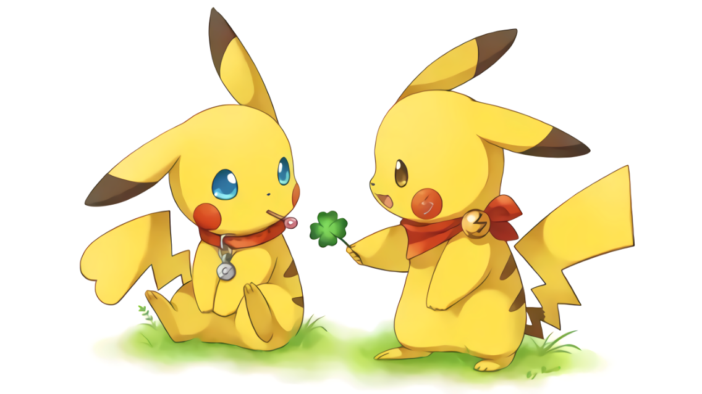

Pikachu (ピカチュウ, Pikachuu) is an Electric-type Pokémon which was introduced in Generation I. Pikachu is renowned for being the most well-known and recognizable Pokémon. Over the years, Pikachu has become so popular that it serves as the Pokémon franchise mascot. It is the Version Mascot and First partner Pokémon for the game Pokémon Yellow and its remake, Pokémon: Let's Go, Pikachu!. It is also well known from the anime, where Ash Ketchum, the protagonist, owns a Pikachu. It evolves from Pichu when leveled up with high friendship and evolves into Raichu using a Thunderstone.
Pikachu are small, and cute mouse-like Pokémon. They are almost completely covered by yellow fur. They have long yellow ears that are tipped with black. A Pikachu's back has two brown stripes, and its large tail is notable for being shaped like a lightning bolt, yet its brown tip is almost always forgotten. Pikachu have short arms with five tiny fingers on forehands and three sharp fingers on their hind legs.
Pikachu are usually friendly creatures that love to be cuddled. They love having their tails rubbed, especially at the base; they also like being stroked. However, if threatened or angered, this Pokémon can be quite aggressive. If someone pulls or steps on its tail, it is most likely it will bite or shock anyone in the area, including the one who pulled its tail. However, in the anime and in the wild of the Kanto region they live in big groups deep in forests and are wary of humans.
Pikachu's special ability is Static, which can cause paralysis in battle if hit by a physical move. In Pokémon Black and White's Dream World, the Trainer receives a Pikachu with the Lightning Rod ability. Pikachu are capable of learning Volt Tackle, a powerful Electric-type physical move exclusive to the Pikachu family of Pokémon. Partner Pikachu is also capable to learning special moves: Zippy Zap, Floaty Fall, Splishy Splash, and the Partner Power, Pika Papow.
For more information of Pikachu Please click here
You can go back to the beginning of this page